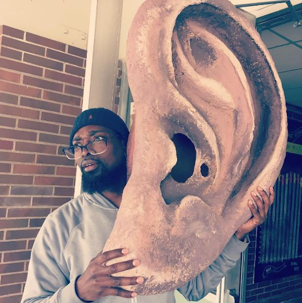

Alder Elementary
What do the students of Alder Elementary most want to see, learn, do, change, or just ... express? And what can we all learn from what they have to say?
Give a listen to their stories below and find out.
If you're feeling inspired by these stories--or think there are more voices out there that need to be heard--feel free to send a note to us on Instagram, Facebook or hello@curiousear.com.